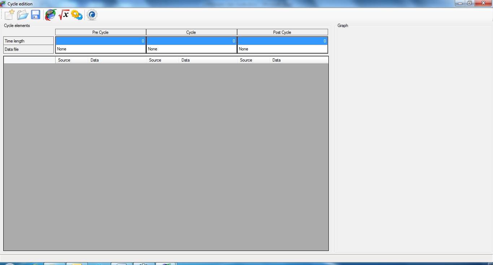

The ‘Advanced cycle creation’ method has extended options for cycle creation allowing tweaking the cycle in order to fit with particular needs.
With the ‘Advanced cycle creation’ method, cycle creation configuration can be saved into a cycle creation configuration file (*.x3c) in order to have configuration re-useable. Such file contains all information needed to create the cycle (CAN configuration, built-in signals, virtual channels) so it can be easily distributed to others without having to give a whole bunch of files.
The biggest advantage of using the ‘Advanced cycle creation’ is that it can use virtual channels as source of data for the cycle. Thus, since virtual channels can be computed using multiple built-in signals, variables and functions, it allows the generation of complex profiles for the cycle.
Click the ‘Cycle\New\Advanced cycle creation’ menu of the main menu strip to access the ‘Advanced cycle creation’ mode.

If there is no CAN configuration currently loaded, a message box pops up proposing to load one.

If you answer ‘Yes’ a ‘File open’ dialog will show up in which you can select the CAN configuration that has to be used to create the cycle.
If you answer ‘No’, the ‘Advanced cycle creation’ form will open but you still will have to open a CAN configuration file in order to create a cycle.
If you answer ‘Cancel’, it cancels the cycle creation and returns to the main form of CANStream.
Well, let’s say that we have answered ‘No’ to this question… Form appears as below.

In the ‘Advanced cycle creation’ environment, a cycle is split in three parts: ‘Pre-cycle’, ‘In cycle’ and ‘Post-cycle’.
Those parts can be considered as sub-cycles, final whole cycle being the concatenation of the three parts. If we consider the ‘In cycle’ part as the actual cycle, the ‘Pre-cycle’ part is the sequence played before the cycle like an introduction. The ‘Post-cycle’ part is therefore the sequence played after the cycle like a conclusion.
‘Pre’ and ‘Post’ cycle concept is very useful when the system to test has to be gently started and stopped.
For instance, something looking like the profile bellow.

Created with the Personal Edition of HelpNDoc: Easily create EBooks